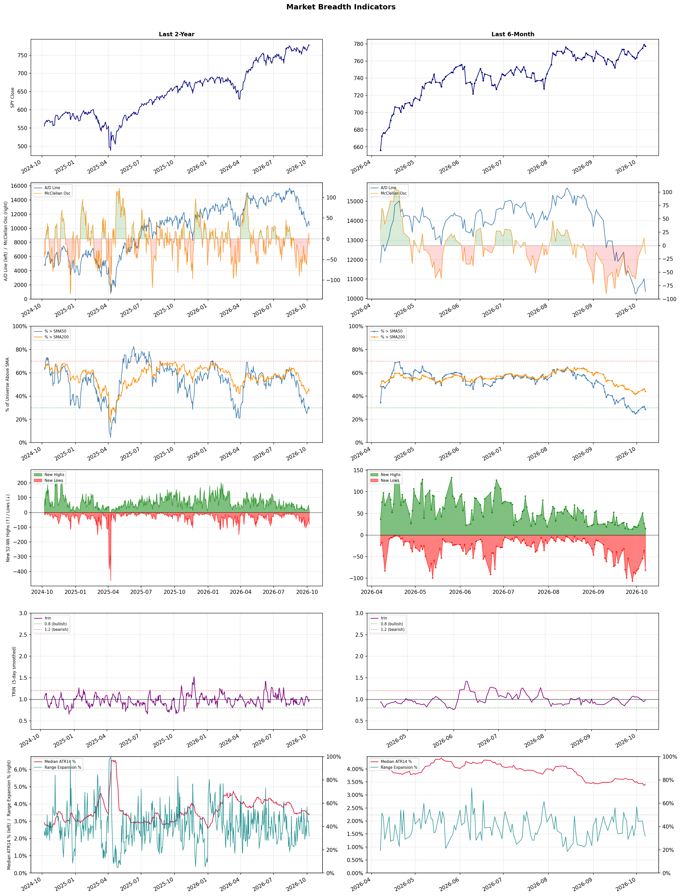

A daily market breadth and sector rotation report for active investors
| Item | Read |
|---|---|
| Regime | Defensive |
| Risk posture | Defensive |
| Universe | 1,315 stocks tracked · 15 new 52-week highs · 30 active swing setups |
| Breadth | only 28.7% of tracked stocks are above SMA50, new lows exceed new highs (81 vs 15), McClellan oscillator (breadth momentum) is negative at -15.4 |
| Leadership | Oil & Gas Refining & Marketing, Health Information Services, and Diagnostics & Research |
| Weakest groups | REIT - Mortgage, Agricultural Inputs, and Resorts & Casinos |
Use this report to prioritize research and chart review; validate entries, stops, liquidity, earnings, and risk before acting.
| Item | Read |
|---|---|
| Primary read | Defensive regime with Defensive risk posture. |
| Research queue | MPC, VLO, DINO, PBF, CSAN |
| Leadership focus | Oil & Gas Refining & Marketing, Health Information Services, and Diagnostics & Research |
| Caution list | REIT - Mortgage, Agricultural Inputs, and Resorts & Casinos |
| Review prompt | Check extension risk, chart location, fundamentals, valuation, and earnings before using any research row. |
| Item | Read |
|---|---|
| Primary read | 4 active risk warnings; use screen output as watchlist input only. |
| Bullish screens | NTAP, ANET, EXTR, HPE, ABBV |
| Bearish screens | BSX, JBLU, CPRT, MIAX, CG |
| Alerts / levels | Automated trigger, stop, ATR, liquidity, reward/risk, and event-risk levels are pending future enrichment. |
| Review prompt | Open the linked chart, define trigger and invalidation, then check liquidity and event risk independently. |
Risk Posture: Defensive — screen backdrop favors caution; require independent risk review before new exposure
Metric context: McClellan below -50 = elevated selling pressure; below -100 = washout territory. Range Expansion = share of stocks with daily range above their 20-day average. Signal Density = share of tracked names appearing in signal screens.
| Breadth Date | % > SMA50 | % > SMA200 | New Highs | New Lows | McClellan | Median Range | Avg Range | Median ATR14 | Range Expansion | Signal Density |
|---|---|---|---|---|---|---|---|---|---|---|
| 2026-10-07 | 28.7% | 44.2% | 15 | 81 | -15.4 | 2.7% | 3.1% | 3.4% | 31.6% | 7.4% |

Prior comparison date: October 6, 2026
| Metric | Prior | Current | Change |
|---|---|---|---|
| Regime | Defensive | Defensive | unchanged |
| Risk Posture | Defensive | Defensive | unchanged |
| % > SMA50 | 31.0% | 28.7% | -2.3 pts |
| % > SMA200 | 46.3% | 44.2% | -2.1 pts |
| New Highs | 27 | 15 | -12 |
| New Lows | 36 | 81 | -45 |
Top-10 industries entering: Apparel Retail and Computer Hardware. Top-10 industries leaving: Oil & Gas Integrated and REIT - Hotel & Motel. New multi-signal long setups: ANET, HPE, NTAP. New multi-signal short setups: ARDX, BSX, CPB, CPRT, LU, MIAX, QFIN.
| Status | Tickers | Read |
|---|---|---|
| Added | ANET, ARDX, ARM, BB, BSX, CPB, CPRT, DOCN | New technical screen matches vs prior report. |
| Removed | BBD, CRWD, GTES, GTLB, HPQ, ITUB, JCI, LITE | No longer present in today's technical screen matches. |
| Still Active | ABBV, ALAB, AMAT, CG, EXTR, FER, JBLU, KLAC | Appeared in both current and prior reports. |
| Promoted | none | Model Screen Score improved by at least 15 points. |
| Downgraded | ALAB | Model Screen Score declined by at least 15 points. |
| Direction | Industry | ETF | Prior Rank | Current Rank | Days | Rank Change |
|---|---|---|---|---|---|---|
| Rose | Semiconductor Equipment & Materials | SOXX | 77 | 5 | 35 | +72 |
| Rose | Electronic Components | XLK | 76 | 6 | 35 | +70 |
| Rose | Semiconductors | SOXX | 72 | 4 | 35 | +68 |
| Rose | Scientific & Technical Instruments | N/A | 70 | 9 | 35 | +61 |
| Rose | Communication Equipment | IYZ | 74 | 14 | 35 | +60 |
Bull: The Semiconductor Equipment & Materials sector is experiencing a rise in relative strength primarily due to the booming demand for semiconductor technology driven by the AI revolution, as highlighted in the Morningstar report. This surge in demand is reflected in the strong performances of key players like Veeco Instruments, Lam Research, and Applied Materials, which have all seen significant stock price increases amid a broader sector rally, indicating robust investor confidence in the industry's growth prospects. Additionally, the recent headlines suggest that despite some volatility, the long-term outlook remains positive, with analysts still maintaining optimistic price targets for major semiconductor stocks.
Bear: While the semiconductor sector appears to be enjoying a temporary rally, driven by hype around AI and recent stock price increases, this may not reflect sustainable growth. The significant drop in Applied Materials' stock after the Broadcom shock indicates underlying volatility and potential overvaluation, suggesting that the market may be overly optimistic about future demand. Furthermore, the semiconductor industry is facing increasing geopolitical risks, supply chain challenges, and potential regulatory hurdles, which could dampen long-term growth prospects and investor confidence.
Verdict: The semiconductor equipment and materials sector is rising due to surging demand fueled by advancements in AI technology, with strong performances from key players signaling robust investor confidence. However, investors should remain cautious of potential overvaluation and geopolitical risks, as evidenced by the volatility surrounding Applied Materials' stock, which may undermine the sustainability of this growth. It is advisable to closely monitor market conditions and regulatory developments that could impact the industry's long-term outlook.
Sources: Google News
Bull: The rising relative strength of the Electronic Components industry can be attributed to robust earnings reports and positive industry trends, as highlighted by Amphenol's strong performance in Q2, which positions it as a leader in the sector. Additionally, the focus on promising manufacturing electronics stocks, as noted in recent analyses, suggests a growing demand for electronic components driven by advancements in technology and increased investments in sectors such as electric power solutions and manufacturing, further bolstering investor confidence in the industry.
Bear: While the rising relative strength of the Electronic Components industry may seem promising, it is essential to consider the potential overvaluation of stocks driven by short-term earnings reports rather than sustainable growth. The industry's reliance on cyclical demand, particularly in sectors like electric power solutions, could expose it to significant volatility as macroeconomic factors, such as rising interest rates and supply chain disruptions, continue to pose headwinds. Furthermore, the focus on a few standout performers like Amphenol may overshadow the broader challenges faced by the majority of companies in the sector, which may struggle to maintain profitability amid increasing competition and cost pressures.
Verdict: The Electronic Components industry's rising strength is fundamentally driven by robust earnings and increased demand fueled by technological advancements and investments in sectors like electric power solutions. However, investors should remain cautious of potential overvaluation and the cyclical nature of the industry, particularly given macroeconomic headwinds such as rising interest rates and supply chain disruptions, which could impact profitability for many companies outside of standout performers like Amphenol.
Sources: Google News
Bull: The semiconductor industry is experiencing a resurgence in relative strength primarily due to a rebound in investor sentiment following a recent sector selloff, as highlighted by BofA's identification of top semiconductor stocks to buy. Additionally, the positive outlook from Zacks and the recognition of standout performers like Macom, along with a broader recovery in equity markets as noted by RBC Wealth Management, suggest that strong demand for semiconductor technologies—driven by advancements in AI, 5G, and IoT—continues to support growth and investor confidence in this sector.
Bear: While the semiconductor industry may currently exhibit a rising relative strength and a rebound in investor sentiment, this could be misleading as it often follows cyclical patterns that do not guarantee sustained growth. The sector remains vulnerable to macroeconomic headwinds, including potential supply chain disruptions, geopolitical tensions, and rising interest rates, which could dampen demand for semiconductor technologies despite short-term optimism. Furthermore, the focus on standout performers like Macom may distract from the broader challenges facing the industry, such as overcapacity and pricing pressures that could undermine profitability in the long run.
Verdict: The semiconductor industry's recent resurgence is fundamentally driven by a rebound in investor sentiment fueled by strong demand for technologies related to AI, 5G, and IoT, alongside a broader recovery in equity markets. However, investors should remain cautious of cyclical patterns and key risks such as potential supply chain disruptions and rising interest rates, which could impact demand and profitability in the long run. It is advisable to focus on companies with robust fundamentals and strategic positioning to navigate these challenges effectively.
Sources: Google News
Bull: The rising relative strength of the Scientific & Technical Instruments industry is primarily driven by the increasing demand for advanced technologies, particularly in the context of the ongoing AI boom, as highlighted by Morningstar. Companies like Coherent Corp. and Sensata Technologies are well-positioned to benefit from this trend, as their innovations in optical and sensing technologies are critical for AI applications, thereby attracting investor interest and driving stock performance in the sector. Additionally, the positive sentiment surrounding these firms, as reflected in multiple headlines, underscores a growing recognition of their potential in a rapidly evolving technological landscape.
Bear: While the rising relative strength of the Scientific & Technical Instruments industry may seem promising, it is essential to consider the potential overvaluation of stocks in this sector, particularly as investor enthusiasm surrounding the AI boom could lead to inflated expectations. Companies like Coherent Corp. and Sensata Technologies may face significant challenges, such as supply chain disruptions, rising input costs, and increased competition, which could hinder their ability to capitalize on the AI trend effectively. Moreover, the broader economic environment, including potential interest rate hikes and inflationary pressures, could dampen investment in high-growth sectors, leading to a correction in stock prices.
Verdict: The Scientific & Technical Instruments industry is experiencing a rise due to heightened demand for advanced technologies driven by the AI boom, with companies like Coherent Corp. and Sensata Technologies positioned to capitalize on this trend through their innovative optical and sensing solutions. However, investors should remain cautious of potential overvaluation risks and external challenges, such as supply chain disruptions and economic pressures, which could negatively impact stock performance in this sector.
Sources: Google News
Bull: The Communication Equipment sector is experiencing a bullish trend largely due to the ongoing advancements in 5G technology, which is highlighted by the article on the "12 Best 5G Stocks for 2026," signaling strong future growth potential. Additionally, the sector-wide rally, as evidenced by Viasat's 6.4% jump, reflects increased investor confidence, while significant trading activity in telecom equipment, as noted in the BigGo Finance report, indicates robust demand and investment in communication infrastructure.
Bear: While the recent advancements in 5G technology and the sector-wide rally may seem promising, they mask underlying challenges such as oversaturation in the market, rising competition, and potential regulatory hurdles that could stifle growth. Moreover, the spike in trading activity could be driven more by speculative trading rather than genuine demand, indicating that investor confidence may be built on shaky foundations rather than sustainable fundamentals.
Verdict: The Communication Equipment sector's bullish trend is fundamentally driven by the accelerating rollout of 5G technology, which is spurring investment and innovation in communication infrastructure. However, investors should remain cautious of the key risk posed by market oversaturation and rising competition, which could lead to regulatory challenges and undermine long-term growth prospects. Therefore, while opportunities abound, a careful evaluation of individual companies' fundamentals and market positioning is essential before making investment decisions.
Sources: Google News
| Direction | Industry | ETF | Prior Rank | Current Rank | Days | Rank Change |
|---|---|---|---|---|---|---|
| Fell | Agricultural Inputs | N/A | 7 | 86 | 35 | -79 |
| Fell | Uranium | URA | 23 | 83 | 42 | -60 |
| Fell | Gold | GDX | 3 | 55 | 28 | -52 |
| Fell | Banks - Diversified | N/A | 9 | 59 | 42 | -50 |
| Fell | Oil & Gas Equipment & Services | XES | 20 | 68 | 28 | -48 |
Bear: While the bull analyst highlights potential strong roadmaps for select companies, the overarching concerns regarding fertilizer and energy supply shocks pose significant risks that could undermine the entire sector's profitability. Additionally, the falling relative strength trend indicates a lack of investor confidence, suggesting that even with some companies showing promise, the broader agricultural inputs sector may struggle to recover amidst ongoing geopolitical tensions and volatile commodity prices, which could lead to further operational instability and diminished returns.
Bull: The Agricultural Inputs sector is likely experiencing a decline in relative strength due to concerns over fertilizer and energy supply shocks, as highlighted by Simply Wall Street, which may be causing investor apprehension about the profitability and operational stability of companies within this industry. Additionally, the broader economic context, as noted by Seeking Alpha, suggests that while the materials sector is breaking out, the agricultural inputs segment may be lagging due to its sensitivity to fluctuating commodity prices and geopolitical factors impacting supply chains. However, with analysts identifying strong future roadmaps for key players like Escorts Kubota, Coromandel International, and Godrej Agrovet, there remains a bullish outlook for the sector as it adapts and evolves in response to these challenges.
Verdict: The Agricultural Inputs sector is likely declining due to heightened investor concerns over fertilizer and energy supply shocks, which threaten the profitability and operational stability of companies in the industry. While select companies may have promising roadmaps for adaptation, the overarching risk of geopolitical tensions and volatile commodity prices could hinder the sector's recovery, warranting caution for investors considering exposure to this space.
Sources: Google News
Bear: While the recent surge in uranium stocks may seem promising due to positive sentiment around nuclear deals, the underlying issues of profitability and valuation remain significant headwinds for the sector. The disparity between profitable producers and loss-making developers suggests that the market is not uniformly bullish, and the overall decline in relative strength indicates that investor confidence is waning. Additionally, the long-term bullish narrative for uranium is increasingly challenged by rising costs, regulatory hurdles, and potential technological advancements in alternative energy sources that could diminish the demand for nuclear power.
Bull: The recent decline in the relative strength of uranium stocks compared to other industries can be attributed to a sector correction that has highlighted the disparity between profitable uranium producers and loss-making developers, as noted in the ChartMill headline. Additionally, while some uranium stocks are surging due to positive sentiment around nuclear deals, as reported by Kalkine Media, the overall market sentiment may be tempered by concerns over valuation and profitability within the sector, leading to a mixed performance among uranium equities.
Verdict: The recent decline in uranium stocks is primarily driven by a sector correction that has exposed the profitability gap between established producers and struggling developers, leading to mixed investor sentiment. Key risks include rising operational costs, regulatory challenges, and competition from alternative energy sources, which could further undermine demand for nuclear power and investor confidence in the sector. Investors should closely monitor these factors while considering positions in uranium equities, as the potential for continued volatility remains high.
Sources: Google News
Bear: While the bull analyst attributes the relative weakness of gold miners to broader market pressures and selective interest, it's crucial to recognize that the fundamental demand for gold is waning due to rising interest rates and a strengthening dollar, which diminish gold's appeal as a safe haven. Additionally, the recent headlines indicating pressures within the sector suggest that even standout companies may struggle to maintain profitability amid increasing operational costs and regulatory challenges, raising concerns about the sustainability of any short-term gains in the gold mining industry.
Bull: The relative weakness of gold miners, as indicated by the GDX ETF, is likely driven by broader market pressures and investor sentiment shifting towards riskier assets, as seen in the September selloff highlighted by U.S. Global Investors. Additionally, while gold mining stocks like GoldMining Inc. and Harmony Gold are gaining attention, the overall industry is facing challenges that may be causing caution among investors, as noted in multiple headlines discussing ongoing pressures within the sector. This combination of market volatility and selective interest in standout stocks suggests that while some companies may thrive, the sector as a whole is experiencing headwinds that impact its relative strength.
Verdict: The gold industry is currently experiencing a decline primarily due to rising interest rates and a strengthening dollar, which are eroding gold's attractiveness as a safe haven asset. This fundamental shift, coupled with increasing operational costs and regulatory challenges, poses a significant risk to the profitability of even standout companies within the sector, suggesting that investors should approach gold mining stocks with caution amid these headwinds. To navigate this volatility, it may be prudent to focus on companies with strong fundamentals and cost management strategies while remaining alert to broader economic indicators that could further impact the industry.
Sources: Google News
Bear: While the bull analyst attributes the falling relative strength of the diversified banking sector to macroeconomic pressures and competitive dynamics, it’s crucial to recognize that these factors may mask deeper underlying issues within the sector itself. The persistent concerns over rising interest rates, coupled with an uncertain economic outlook, could lead to increased loan defaults and tighter credit conditions, undermining profitability across the board. Additionally, the focus on individual bank performance may overlook systemic risks, such as regulatory changes and the potential for a recession, which could further erode investor confidence in the entire diversified banking sector.
Bull: The falling relative strength of the diversified banking sector can be attributed to a combination of macroeconomic pressures and competitive performance dynamics highlighted in recent headlines. Specifically, concerns about rising interest rates and economic uncertainty may be weighing on investor sentiment, as suggested by the focus on earnings momentum in articles like those from Seeking Alpha. Additionally, the benchmarking of individual banks like Truist Financial and comparisons of performance among major players such as JPMorgan Chase indicate that while some banks may be performing well, overall sector sentiment remains cautious, impacting the relative strength of diversified banks as an industry.
Verdict: The falling relative strength of the diversified banking sector is primarily driven by macroeconomic pressures, particularly rising interest rates and economic uncertainty, which are dampening investor sentiment and profitability prospects. Key risks highlighted by the bear thesis include the potential for increased loan defaults and tighter credit conditions, which could exacerbate systemic vulnerabilities and further undermine confidence in the sector. Investors should closely monitor economic indicators and regulatory developments to assess the potential impact on bank performance moving forward.
Sources: Google News
Bear: While the bull analyst highlights potential recovery signals, the overall trend in the Oil & Gas Equipment & Services sector remains concerning, as indicated by the falling relative-strength trend. The recent rally in Innovex International may be an isolated event rather than a sector-wide recovery, and the caution surrounding NOV stock reflects broader investor unease about the sustainability of demand in a volatile energy market. Furthermore, the shift in investor sentiment towards alternative energy stocks suggests a long-term structural change that could further undermine the traditional oil and gas sector's growth prospects.
Bull: The Oil & Gas Equipment & Services sector is likely experiencing a decline in relative strength due to broader market dynamics and investor sentiment shifting towards more promising energy stocks, as highlighted by articles recommending the "best energy stocks to buy" and the focus on long-term investments in oil stocks for 2026. Additionally, the caution expressed in the TradingView article regarding NOV stock indicates a prevailing uncertainty among investors, potentially leading to a wait-and-see approach that dampens enthusiasm for the sector as a whole. However, the recent rally in Innovex International suggests that there are pockets of strength within the sector that could indicate a recovery is on the horizon.
Verdict: The Oil & Gas Equipment & Services sector is experiencing a decline primarily due to shifting investor sentiment towards alternative energy stocks and growing concerns about the sustainability of demand in a volatile market. The key risk from the bear case is that the recent rally in certain companies, like Innovex International, may not signal a broader recovery, as the overall trend remains negative and investor caution persists, potentially leading to further declines in the sector. Investors should closely monitor market dynamics and consider diversifying into more resilient energy sectors to mitigate risks.
Sources: Google News
| Industry | Rank | ETF | 7d | 14d | 28d | 42d | Chg 42d | Size | 20D | 60D | Composite | Active Setups |
|---|---|---|---|---|---|---|---|---|---|---|---|---|
| Oil & Gas Refining & Marketing | 1 | CRAK | 1 | 1 | 1 | 5 | +4 | 7 | 7.7% | 34.9% | 0.991 | 0 |
| Health Information Services | 2 | N/A | 4 | 3 | 8 | 2 | 0 | 12 | 10.2% | 28.5% | 0.939 | 1 |
| Diagnostics & Research | 3 | N/A | 2 | 2 | 6 | 1 | -2 | 16 | 6.5% | 22.1% | 0.919 | 1 |
| Semiconductors | 4 | SOXX | 6 | 10 | 53 | 44 | +40 | 37 | 10.1% | -1.1% | 0.838 | 1 |
| Semiconductor Equipment & Materials | 5 | SOXX | 5 | 13 | 66 | 30 | +25 | 17 | 8.2% | 2.0% | 0.815 | 1 |
| Electronic Components | 6 | XLK | 8 | 9 | 58 | 42 | +36 | 10 | 6.4% | 1.3% | 0.803 | 2 |
| Software - Infrastructure | 7 | IGV | 9 | 7 | 22 | 21 | +14 | 62 | 4.3% | 8.2% | 0.795 | 2 |
| Apparel Retail | 8 | XRT | 12 | 20 | 43 | 17 | +9 | 8 | 3.1% | 8.5% | 0.781 | 0 |
| Scientific & Technical Instruments | 9 | N/A | 15 | 17 | 55 | 39 | +30 | 7 | 4.6% | 4.8% | 0.776 | 0 |
| Computer Hardware | 10 | XLK | 3 | 5 | 18 | 24 | +14 | 15 | 2.3% | 13.0% | 0.768 | 1 |
Rank columns (7d–42d) show the industry's rank that many trading days ago — lower is stronger. Chg 42d = rank change vs 42 trading days ago — positive means the industry moved up. 20D and 60D are the mean stock return within the industry over that period. Active Setups: count of today's swing-trade candidates from this industry appearing across all signal screens.
| Industry | Rank | ETF | 7d | 14d | 28d | 42d | Chg 42d | Size | 20D | 60D | Composite | Active Setups |
|---|---|---|---|---|---|---|---|---|---|---|---|---|
| REIT - Mortgage | 87 | N/A | 85 | 69 | 47 | 65 | -22 | 11 | -18.4% | -21.6% | 0.040 | 0 |
| Agricultural Inputs | 86 | N/A | 60 | 26 | 7 | 37 | -49 | 5 | -32.3% | -22.1% | 0.046 | 0 |
| Resorts & Casinos | 85 | N/A | 86 | 86 | 78 | 84 | -1 | 6 | -14.5% | -20.0% | 0.050 | 0 |
| Gambling | 84 | N/A | 87 | 87 | 38 | 71 | -13 | 5 | -19.0% | -24.2% | 0.051 | 0 |
| Uranium | 83 | URA | 78 | 76 | 25 | 23 | -60 | 6 | -19.8% | -12.5% | 0.054 | 0 |
| Chemicals | 82 | N/A | 84 | 70 | 84 | 87 | +5 | 8 | -10.3% | -23.8% | 0.067 | 0 |
| Other Industrial Metals & Mining | 81 | N/A | 70 | 60 | 44 | 35 | -46 | 21 | -16.6% | -13.2% | 0.095 | 0 |
| REIT - Specialty | 80 | XLRE | 81 | 74 | 57 | 80 | 0 | 11 | -10.4% | -14.7% | 0.159 | 0 |
| Aerospace & Defense | 79 | ITA | 64 | 58 | 85 | 63 | -16 | 26 | -7.3% | -13.9% | 0.160 | 0 |
| Solar | 78 | TAN | 74 | 73 | 86 | 85 | +7 | 8 | -5.9% | -28.7% | 0.170 | 0 |
Rank columns (7d–42d) show the industry's rank that many trading days ago — lower is stronger. Chg 42d = rank change vs 42 trading days ago — positive means the industry moved up. 20D and 60D are the mean stock return within the industry over that period. Active Setups: count of today's swing-trade candidates from this industry appearing across all signal screens.
These are research candidates from top-ranked stocks, capped at five names per industry to avoid over-concentration. Returns shown (60D, 120D, 250D) are historical — they reflect where prices have already moved, not forward expectations. Extension Risk flags names that may require extra patience or a better entry point. They are not buy signals.
Chart: TV = TradingView chart (opens in browser); PDF = local chart file (if downloaded).
| Ticker | Name | Industry | Industry Rank | Market Cap | 60D Hist | 120D Hist | 250D Hist | Extension Risk | Research Reason | Chart |
|---|---|---|---|---|---|---|---|---|---|---|
| MPC | Marathon Petroleum | Oil & Gas Refining & Marketing | 1 | N/A | 46.2% | 96.8% | 138.3% | Constructive | Top-ranked in industry | TV |
| VLO | Valero Energy | Oil & Gas Refining & Marketing | 1 | N/A | 41.2% | 77.0% | 166.6% | Constructive | Top-ranked in industry | TV |
| DINO | HF Sinclair | Oil & Gas Refining & Marketing | 1 | N/A | 40.0% | 94.9% | 128.1% | Constructive | Top-ranked in industry | TV |
| PBF | PBF Energy | Oil & Gas Refining & Marketing | 1 | N/A | 37.9% | 98.4% | 188.3% | Constructive | Top-ranked in industry | TV |
| CSAN | Cosan | Oil & Gas Refining & Marketing | 1 | N/A | 9.5% | 9.5% | 9.5% | Constructive | Top-ranked in industry | TV |
| SDGR | Schrodinger | Health Information Services | 2 | N/A | 69.2% | 126.3% | 31.7% | Extended | Top-ranked in industry; extended | TV |
| TXG | 10x Genomics | Health Information Services | 2 | N/A | 66.2% | 201.5% | 530.5% | Extended | Top-ranked in industry; extended | TV |
| CERT | Certara | Health Information Services | 2 | N/A | 34.3% | 45.5% | -31.1% | Constructive | Top-ranked in industry | TV |
| DOCS | Doximity | Health Information Services | 2 | N/A | 27.0% | 14.2% | -62.3% | Constructive | Top-ranked in industry | TV |
| TEM | Tempus AI | Health Information Services | 2 | N/A | 19.9% | 29.3% | -31.9% | Constructive | Top-ranked in industry | TV |
| TWST | Twist Bioscience | Diagnostics & Research | 3 | N/A | 68.2% | 176.8% | 374.7% | Extended | Top-ranked in industry; extended | TV |
| NTRA | Natera | Diagnostics & Research | 3 | N/A | 45.1% | 101.7% | 129.9% | Extended | Top-ranked in industry; extended | TV |
| ILMN | Illumina | Diagnostics & Research | 3 | N/A | 40.0% | 101.7% | 173.8% | Extended | Top-ranked in industry; extended | TV |
| RVTY | Revvity | Diagnostics & Research | 3 | N/A | 38.2% | 71.8% | 67.8% | Constructive | Top-ranked in industry | TV |
| A | Agilent Technologies | Diagnostics & Research | 3 | N/A | 25.3% | 43.5% | 21.0% | Constructive | Top-ranked in industry | TV |
| AMD | Advanced Micro Devices | Semiconductors | 4 | N/A | 17.8% | 132.1% | 174.2% | Extended | Top-ranked in industry; extended | TV |
| MXL | MaxLinear | Semiconductors | 4 | N/A | 16.0% | 359.8% | 561.5% | Extended | Top-ranked in industry; extended | TV |
| RMBS | Rambus | Semiconductors | 4 | N/A | 5.8% | -7.1% | 12.1% | Constructive | Top-ranked in industry | TV |
| ALAB | Astera Labs | Semiconductors | 4 | N/A | 5.7% | 123.8% | 74.3% | Extended | Top-ranked in industry; extended | TV |
| CRDO | Credo Technology | Semiconductors | 4 | N/A | -6.8% | 38.4% | 47.8% | Lagging | Top-ranked in industry; lagging | TV |
These are technical screen matches from existing signal files. They are not trade recommendations. Trigger, stop, ATR, liquidity, reward/risk, and event risk still require separate validation until those inputs are available.
Model Screen Score is weighted by signal count, industry rank, freshness, and setup type. It is not a probability of profit, expected return, or suitability rating. Industry cap: max 3 candidates per industry.
Signal glossary: Momentum Pullback = stock in an uptrend that has pulled back 10–30% and shows re-entry conditions. MA Compression = short- and long-term moving averages converging, often preceding a directional move. Three-Day Up/Down = three consecutive closes in the same direction. New 52Wk High/Low = price reached a new annual extreme.
Chart: TV = TradingView chart (opens in browser); PDF = local chart file (if downloaded).
| Ticker | Industry | Setups | Close | Industry Rank | Signal Count | Model Screen Score | Reason | Chart |
|---|---|---|---|---|---|---|---|---|
| NTAP | Software - Infrastructure | New 52Wk High; Three-Day Up | 235.77 | 7 | 2 | 93 | Multi-signal; top industry breakout | TV |
| ANET | Computer Hardware | New 52Wk High; Three-Day Up | 215.83 | 10 | 2 | 85 | Multi-signal; top industry breakout | TV |
| EXTR | Communication Equipment | Momentum Pullback; Three-Day Up | 24.60 | 14 | 2 | 85 | Multi-signal; pullback setup | TV |
| HPE | Communication Equipment | New 52Wk High; Three-Day Up | 72.09 | 14 | 2 | 85 | Multi-signal; new-high strength | TV |
| ABBV | Drug Manufacturers - General | New 52Wk High; Three-Day Up | 271.36 | 16 | 2 | 77 | Multi-signal; new-high strength | TV |
| SDGR | Health Information Services | Momentum Pullback | 27.29 | 2 | 1 | 65 | Single-signal; top industry pullback | TV |
| TEM | Health Information Services | Momentum Pullback | 70.35 | 2 | 1 | 65 | Single-signal; top industry pullback | TV |
| TWST | Diagnostics & Research | Momentum Pullback | 155.65 | 3 | 1 | 65 | Single-signal; top industry pullback | TV |
| ALAB | Semiconductors | Momentum Pullback | 382.25 | 4 | 1 | 58 | Single-signal; top industry pullback | TV |
| ARM | Semiconductors | Momentum Pullback | 294.37 | 4 | 1 | 58 | Single-signal; top industry pullback | TV |
| HIMX | Semiconductors | Momentum Pullback | 14.09 | 4 | 1 | 58 | Single-signal; top industry pullback | TV |
| AMAT | Semiconductor Equipment & Materials | Momentum Pullback | 520.65 | 5 | 1 | 58 | Single-signal; top industry pullback | TV |
| KLAC | Semiconductor Equipment & Materials | Momentum Pullback | 196.83 | 5 | 1 | 58 | Single-signal; top industry pullback | TV |
| FLEX | Electronic Components | Momentum Pullback | 119.34 | 6 | 1 | 58 | Single-signal; top industry pullback | TV |
| BB | Software - Infrastructure | Momentum Pullback | 8.77 | 7 | 1 | 58 | Single-signal; top industry pullback | TV |
| DOCN | Software - Infrastructure | Momentum Pullback | 127.28 | 7 | 1 | 58 | Single-signal; top industry pullback | TV |
| TEL | Electronic Components | MA Compression | 215.83 | 6 | 1 | 53 | Single-signal; top industry setup | TV |
| SMCI | Computer Hardware | Momentum Pullback | 44.94 | 10 | 1 | 50 | Single-signal; top industry pullback | TV |
| OCTV | Software - Application | MA Compression | 19.72 | 13 | 1 | 45 | Single-signal; compression setup | TV |
Bearish setups — stocks making new lows or showing persistent downside patterns. Validate carefully before acting.
| Ticker | Industry | Setups | Close | Industry Rank | Signal Count | Model Screen Score | Reason | Chart |
|---|---|---|---|---|---|---|---|---|
| BSX | Medical Devices | New 52Wk Low; Three-Day Down | 41.58 | 37 | 2 | 40 | Multi-signal; new-low weakness | TV |
| JBLU | Airlines | New 52Wk Low; Three-Day Down | 3.97 | 39 | 2 | 40 | Multi-signal; new-low weakness | TV |
| CPRT | Specialty Business Services | New 52Wk Low; Three-Day Down | 26.62 | 42 | 2 | 35 | Multi-signal; new-low weakness | TV |
| MIAX | Capital Markets | New 52Wk Low; Three-Day Down | 30.18 | 43 | 2 | 35 | Multi-signal; new-low weakness | TV |
| CG | Asset Management | New 52Wk Low; Three-Day Down | 37.80 | 47 | 2 | 35 | Multi-signal; new-low weakness | TV |
| OTF | Asset Management | New 52Wk Low; Three-Day Down | 9.25 | 47 | 2 | 35 | Multi-signal; new-low weakness | TV |
| ARDX | Biotechnology | New 52Wk Low; Three-Day Down | 3.26 | 51 | 2 | 35 | Multi-signal; new-low weakness | TV |
| FER | Engineering & Construction | New 52Wk Low; Three-Day Down | 50.60 | 54 | 2 | 35 | Multi-signal; new-low weakness | TV |
| CPB | Packaged Foods | New 52Wk Low; Three-Day Down | 18.90 | 65 | 2 | 25 | Multi-signal; new-low weakness | TV |
| LU | Credit Services | New 52Wk Low; Three-Day Down | 0.98 | 70 | 2 | 25 | Multi-signal; new-low weakness | TV |
| QFIN | Credit Services | New 52Wk Low; Three-Day Down | 6.18 | 70 | 2 | 25 | Multi-signal; new-low weakness | TV |
How To Use This Report
| Use | Purpose |
|---|---|
| Market map | Start with breadth, regime, risk warnings, and what changed since the prior report. |
| Industry scan | Use leading, deteriorating, rising, and declining industries to focus research. |
| Research queue | Treat long-term candidates as names for deeper fundamental, valuation, and chart review. |
| Technical review | Treat bullish and bearish screen matches as watchlist inputs that require independent trigger, stop, liquidity, and event-risk checks. |
| Source follow-up | Use chart links and source files to verify raw inputs before relying on any row. |
What This Report Is Not
| Not | Meaning |
|---|---|
| Investment advice | The report does not evaluate personal objectives, risk tolerance, tax situation, account type, or suitability. |
| Buy/sell recommendation | Named tickers are research candidates or screen matches, not recommendations to transact. |
| Price target | The report does not provide fair value estimates, targets, or expected returns. |
| Trade plan | Trigger, stop, sizing, reward/risk, liquidity, and event-risk review remain separate user work. |
| Performance claim | Model Screen Score is not validated historical performance or a forecast of future results. |
| Item | Note |
|---|---|
| Version | Daily Report Methodology v1 |
| Model Screen Score | Screen-fit rank based on signal count, industry rank, freshness, and setup type. |
| Not predictive proof | The score is not expected return, probability of profit, historical validation, or suitability analysis. |
| Industry ranks | Composite industry ranks use existing daily ranking outputs and historical rank columns when available. |
| Research candidates | Long-term rows are research candidates from ranked stocks and leading industries, with historical returns labeled as historical only. |
| Technical matches | Bullish and bearish rows are screen matches requiring independent chart, trigger, stop, liquidity, and event-risk review. |
| Source | Status | Rows | Path |
|---|---|---|---|
| Market breadth | present | 1253 | breadth_20261007.csv |
| Industry composite rankings | present | 87 | all_industry_composite_20261007.csv |
| Top ranked stocks | present | 191 | top_ranked_composite_20261007.csv |
| All ranked stocks | present | 1315 | all_stocks_composite_sorted_20261007.csv |
| Top momentum pullbacks | present | 1468 | top_momentum_pullbacks_20261007.csv |
| MA compression | present | 1468 | ma_compression_stocks_20261007.csv |
| Three-day up/down | present | 116 | three_day_up_down_stocks_20261007.csv |
| New 52-week members | present | 96 | breadth_new_52wk_members_20261007.csv |
This report is generated from automated technical screens and is for informational and research purposes only. It is not investment advice, a solicitation, or a recommendation to buy or sell any security. Past performance is not indicative of future results. You are solely responsible for your own investment decisions. Consult a licensed financial advisor before acting on any information herein.